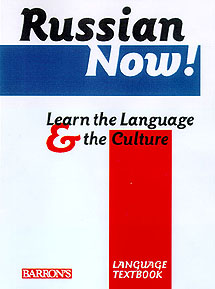

Page index / publications
Russian Now

Russian Now! Learn the Language and the Culture. Textbook, Workbook, Grammar Guide, Instructor's Manual, three cassettes.Translated from the German and adapted for speakers of English from OKHO 1.
(Barron's: 1996).
- A brand new colorful way to learn Russian for college and high school students
- A communicative approach based on providing a strong structural foundation from the very beginning
- The Instructor's Manual provides a section by section overview along with tips on presenting the material to make this a successful language learning experience
- The text and other materials will also be supplemented by materials available over the World Wide Web